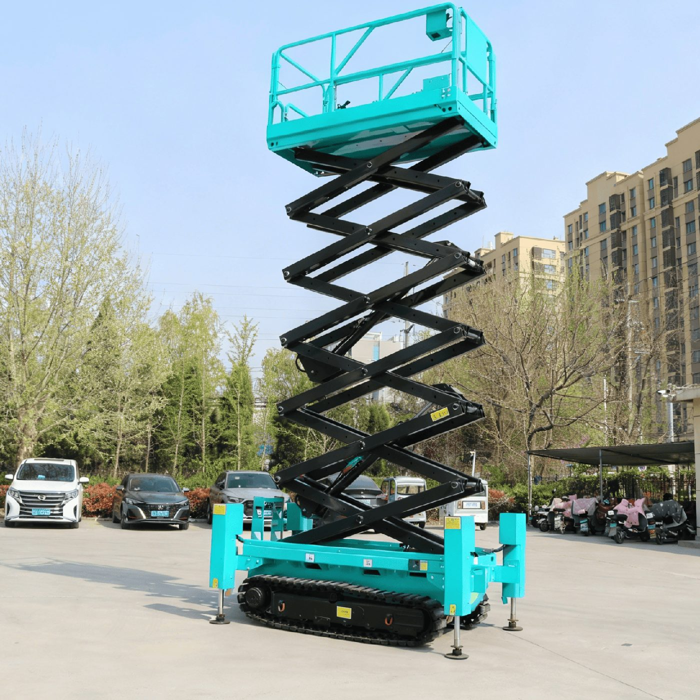
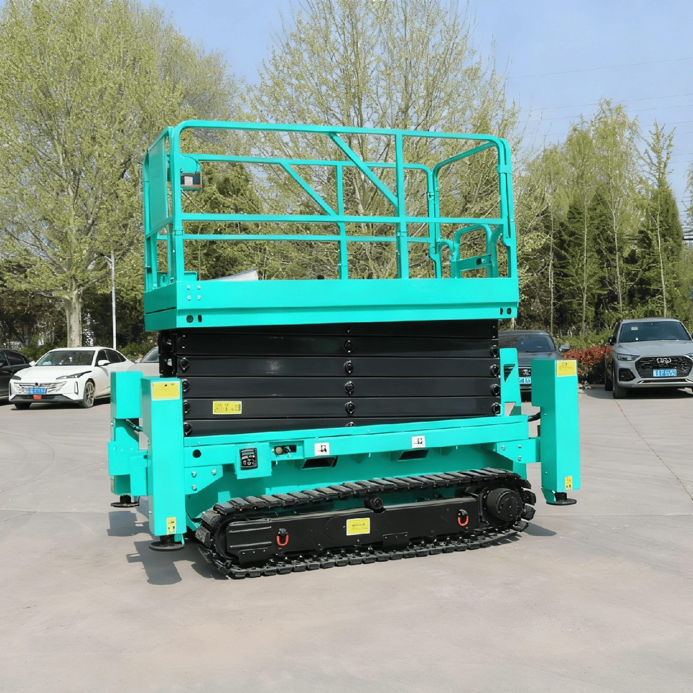

Гусеничные ножничные подъёмные платформы Longqing SJT06E–SJT12E
Официальный поставщик в России — ООО «ВИРА». Сертификация CE и EAC, гарантия 18 месяцев, отгрузка из Владивостока и доставка по всей России.


Гусеничные ножничные платформы Longqing SJT — всесезонное решение для площадок, где колёсной технике не пройти: грунтовые основания, снег, склоны и стеснённые условия. Гусеничное шасси распределяет вес машины и обеспечивает проходимость, а автоматическое выравнивание аутригерами стабилизирует платформу на неровностях. Линейка включает четыре модели с рабочей высотой от 8 до 13,85 м — SJT06E, SJT08E, SJT10E и SJT12E.
При этом электрический привод сохраняет все преимущества ножничной схемы: нулевой выброс, низкий уровень шума, выдвижная платформа и самозакрывающаяся дверь. Вес машин — 3166–3700 кг. Как и вся техника Longqing, серия SJT сертифицирована по CE и EAC, гарантия — 18 месяцев, отправка — из Владивостока в любой регион России.
Модельный ряд — 4 модели
- SJT06E — рабочая высота 8 м, вес 3166 кг, гусеничное шасси
- SJT08E — рабочая высота 10 м, вес 3300 кг, гусеничное шасси
- SJT10E — рабочая высота 12 м, вес 3600 кг, гусеничное шасси
- SJT12E — рабочая высота 13,85 м, вес 3700 кг, гусеничное шасси
Особенности и системы безопасности
- Пропорциональное управление
- Автоматическая система торможения
- Звуковой сигнализатор
- Выдвижная платформа
- Автоматическая система выравнивания аутригерами
- Система аварийного опускания
- Звуковой сигнал
- Система защиты зарядки
- Самозакрывающаяся дверь платформы
- Кнопка экстренной остановки
- Счетчик времени работы
- Система защиты гидравлических шлангов от разрыва
- Опорный стержень для безопасного обслуживания
- Система диагностики неисправностей
- Стандартные отверстия для вилочного погрузчика
- Система защиты от наклона
- Складные ограждения
Технические характеристики
Полные заводские параметры по каждой модели серии. Цену и срок поставки уточняйте у ООО «ВИРА» — +7 (423) 256-47-21.
| Модель | SJT06E | SJT08E | SJT10E | SJT12E |
|---|---|---|---|---|
| Максимальная рабочая высота | 8 м | 10 м | 12 м | 13,85 м |
| Максимальная высота платформы | 6 м | 8 м | 10 м | 11,85 м |
| Безопасная рабочая нагрузка (SWL) | 450 кг | 450 кг | 320 кг | 320 кг |
| Безопасная рабочая нагрузка выдвижной платформы | 110 кг | 110 кг | 110 кг | 110 кг |
| Размеры рабочей платформы (Д×Ш×В) | 2,264×1,13×1,21 м | 2,264×1,13×1,21 м | 2,264×1,13×1,21 м | 2,264×1,13×1,21 м |
| Общие размеры (Д×Ш×В) — ограждение не сложено | 2,881×1,688×2,275 м | 2,881×1,688×2,41 м | 2,881×1,688×2,545 м | 2,881×1,688×2,68 м |
| Общие размеры (Д×Ш×В) — ограждение сложено | 2,881×1,688×1,745 м | 2,881×1,688×1,88 м | 2,881×1,688×2,015 м | 2,881×1,688×2,15 м |
| Размер выдвижения платформы | 0,9 м | 0,9 м | 0,9 м | 0,9 м |
| Минимальный дорожный просвет | 0,13 м | 0,13 м | 0,13 м | 0,13 м |
| Радиус поворота | Поворот на месте | Поворот на месте | Поворот на месте | Поворот на месте |
| Ходовой/Приводной двигатель | 48V/4,0 кВт | 48V/4,0 кВт | 48V/4,0 кВт | 48V/4,0 кВт |
| Подъемный/Приводной двигатель | 48V/3,42 кВт | 48V/3,42 кВт | 48V/3,42 кВт | 48V/3,42 кВт |
| Время подъема/опускания (сек) | 65/60 | 65/60 | 65/60 | 65/60 |
| Скорость движения машины (в сложенном состоянии) | 3,5 км/ч | 3,5 км/ч | 3,5 км/ч | 3,5 км/ч |
| Аккумуляторная батарея | 8×6V/200Ah | 8×6V/200Ah | 8×6V/200Ah | 8×6V/200Ah |
| Зарядное устройство | 48V/30A | 48V/30A | 48V/30A | 48V/30A |
| Максимальная способность преодоления подъемов | 25% | 25% | 25% | 25% |
| Максимально допустимый угол при работе | 1,5°/3° | 1,5°/3° | 1,5°/3° | 1,5°/3° |
| Гусеничное шасси | SDE35-Z230L | SDE35-Z230L | SDE35-Z230L | SDE35-Z230L |
| Общий вес машины | 3166 кг | 3300 кг | 3600 кг | 3700 кг |
Частые вопросы о технике Longqing
Чем гусеничная платформа SJT отличается от колёсных ножничных?
Гусеничным шасси: машина проходит по грунту, снегу и склонам, где колёсная техника буксует или проседает. На неровностях платформу стабилизирует автоматическое выравнивание аутригерами.
Какие рабочие высоты у серии SJT?
SJT06E — 8 м, SJT08E — 10 м, SJT10E — 12 м, SJT12E — 13,85 м. Все модели — самоходные, с электроприводом и пропорциональным управлением.
Какой вес у гусеничных платформ?
3166 кг (SJT06E), 3300 кг (SJT08E), 3600 кг (SJT10E) и 3700 кг (SJT12E). При этом привод электрический: нулевой выброс позволяет работать и внутри помещений.
Подберём модель под вашу задачу
Расскажите об объекте, высоте и условиях работ — предложим подходящую модель Longqing, рассчитаем доставку из Владивостока в ваш регион.